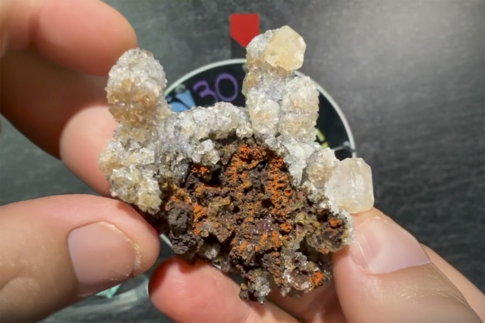

Calcite
"Calcite Stalactite"
V-10411
Potosí Mine, Francisco Portillo, West Camp, Santa Eulalia Mining District, Aquiles Serdán Municipality, Chihuahua, Mexico
Purchased 5/23/2026 from MinCollect for $94.72
Core Collection • In Collection
Details
Storage Type: Drawer
Storage Location: C1D2 The Reserve Miniatures
Size class: TBD (0)
Dimensions: 2.5 × 1.5 × 5.6 cm
Estimated Mass: 18.2 g
Luster: Average, Vitreous